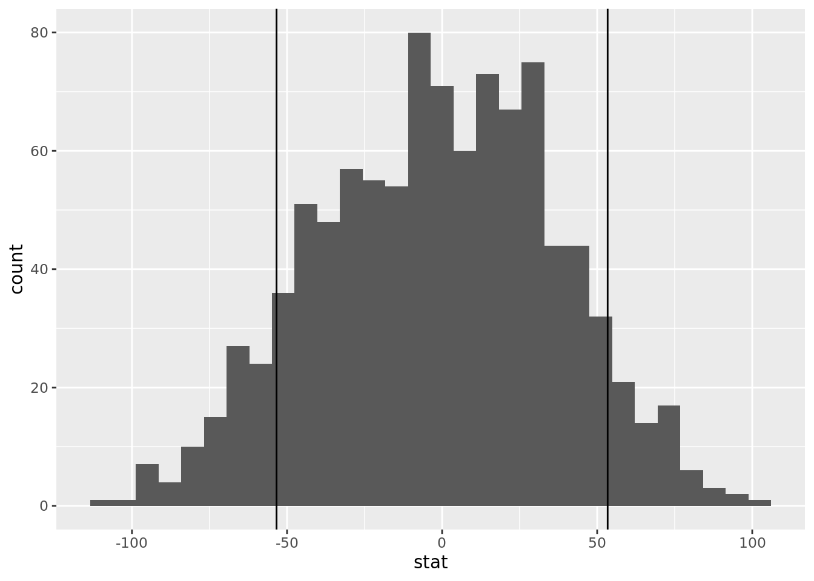

# A tibble: 7 × 2
Category Total_Crime_Category
<chr> <dbl>
1 Disability 83
2 Ethnicity 655
3 Gender 18
4 Gender Identity 31
5 Race 2872
6 Religion 1032
7 Sexual orientation 1237Hate Crime Occurrences in 2013
Analysis of FBI Data
Introduction and Data
For our research question, we would like to know where hate crimes occur more frequently: in states that voted democrat for the 2012 election, or in republican states? Additionally, we would like to know which hate crime category experienced the most crimes.
This question is important because it can potentially be used to compare to analyses of more recent data and identify risk factors for hate crime occurrences, which can then inform policy decisions. In an ethnically, racially, religiously and sexually diverse nation, hate crimes are one of the many substantial barriers to our functioning as a safe and accepting society. 2013 was a year in which the political climate of the United States was less accepting of diverse identities compared to how it is now. Specifically, 2013 was pre- legalization of same sex marriage and the beginning of the Black Lives Matter movement. We hypothesize, due to the political climate at the time, that the data will show a positive relationship between hate crimes and states with republican politics. Furthermore, we predict that there will be a higher number of hate crime occurrences motivated by sexual orientation and race than in other categories.
Our dataset was aggregated from the FBI Hate Crimes Report for 2013. The data was collected in 2016 by accessing statistics across states from the FBI Hate Crimes Report website, which is open access (https://www.fbi.gov/about-us/cjis/ucr/hate-crime/2013). The dataset contains two csv files with a table detailing agencies that reported incidences of hate crimes in 2013 and another for those that reported no incidences of hate crimes in 2013. These tables contain 1827 and 12827 observations, respectively.
Each row of our dataset represents an area within a state, and hate crime reports per minority category are counted within each area. We will utilize the variable state as a location identifier and group by state, omitting specific cities and counties. We will then group these states into “Republican” and “Democrat” based on which way the state voted in the 2012 election. We will also utilize the columns for Race, Religion, Sexual Orientation, Ethnicity, Disability, Gender, and Gender Identity, which will be categories for our minority category variable. State and minority category each act as categorical variables here, while number of hate crimes is quantitative.
There are a few ethical concerns with this data. Perhaps most prominent, as the literature review later mentions, the incidents in this report are only those that law enforcement has determined meets the criteria for a hate crime. This means, if such criteria is especially constrictive, the dataset may be underreporting the true frequency of hate crimes.
Literature Review
Among the literature we found, a paper published by Cheng et al. used FBI data to examine hate crimes in the U.S. between the years 1996 and 2008 1. Rather than utilizing the raw numbers, they calculated a statistic for how many hate crimes occurred per 10 million victims/offenders within each minority category. Then, they performed various statistical analyses to determine risk factors for hate crime victimization, as a well as risk factors for hate crime offending. They found that White and Black offenders are more likely to target out-groups, while American Indigenous Alaskan Natives and Asians are more likely to target in-groups. They also found significant rates of anti-religious hate crimes, both towards Jewish and Muslim people, and anti-homosexual hate crimes.
Our data set is aggregated from the same source as the study mentioned above, but ours is from the year 2013. We are interested to see how our results compare to a less recent analysis. Additionally, we are interested in how state politics influence hate crime frequency rather than population, which is something not addressed by this study.
Methodology
Pivoting/Tidying Data
We are selecting only the relevant variables from the existing data set. Then, we pivoted the data longer to include different hate crime categories along with the number of hate crimes in that specific category and state/region.
Hate Crimes by Category
Bar Graph of Hate Crime by Category

We are creating a tibble and a bar graph to demonstrate which hate crime category experienced the most crimes in 2013. With the tibble, it gave us the quantitative data of each hate crime category and the bar graph visualizes the quantitative data.
# A tibble: 7 × 5
term estimate std.error statistic p.value
<chr> <dbl> <dbl> <dbl> <dbl>
1 (Intercept) 0.0455 0.0595 0.764 4.45e- 1
2 CategoryEthnicity 0.313 0.0841 3.72 1.97e- 4
3 CategoryGender -0.0356 0.0842 -0.423 6.72e- 1
4 CategoryGender Identity -0.0285 0.0841 -0.338 7.35e- 1
5 CategoryRace 1.53 0.0841 18.2 9.19e-73
6 CategoryReligion 0.520 0.0841 6.18 6.67e-10
7 CategorySexual orientation 0.632 0.0841 7.51 6.16e-14Each of the categorical predictors for minority group are grouped into a single piecewise function called category for simplicity purposes.
\[ \widehat{Number\ of\ Hate\ Crimes} = 0.05 + 0.32 * Ethnicity - 0.04 * Gender - 0.03 * Gender\ Identity \]
\[ + 1.53 * Race + 0.52 * Religion + 0.63 * Sexual\ Orientation \]
\[ Category = \begin{cases} 1 & \text{if Category is used}\\ 0 & \text{otherwise} \end{cases} \]
Pivoting/Tidying Data
Hate Crime Per State
Here, we are summing the totals for the hate crimes reported in each state and assigning it to a new data set called hate_crime_state.
Adding Political Party Based on 2012 Election Data
Here, we pivoted our data set to account for the political affiliation of every state in the U.S. Hawaii is ommitted because it had no observations.
Mean number of Hate Crime for Democratic vs. Republican States
# A tibble: 2 × 2
party mean
<chr> <dbl>
1 Democrat 129.
2 Republican 73.1
# A tibble: 5 × 3
State hate_crime_total party
<chr> <dbl> <chr>
1 California 699 Democrat
2 New_York 443 Republican
3 New_Jersey 404 Republican
4 Massachusetts 350 Democrat
5 Ohio 322 Democrat This is a boxplot of the total hate crimes in each state sorted by political party based on the 2012 voting outcome. This allows us to visualize the difference in hate crime frequency in relation to state political party. We also created a tibble to show which states the outliers in our boxplot correspond to.
Hypothesis Test:
\(H_o: \mu_{democrat} - \mu_{republican} = 0\)
\(H_a: \mu_{democrat} - \mu_{republican} \neq 0\)
Hypothesis Testing Results

# A tibble: 1 × 1
p_value
<dbl>
1 0.144This is a histogram of the results of our hypothesis testing with our observed statistics graphed at both sides of the bell curve, as our alternative hypothesis is two-sided. The hypothesis test resulted in a p-value of .144.
Confidence Interval Results
# A tibble: 1 × 2
lower upper
<dbl> <dbl>
1 -138. 18.3
This is a graph for a confidence interval for the difference in mean hate crime between the two political parties. Our 95% confidence interval shows the difference in mean hate crime for the two parties lies between (-138, 18.3).
The visualizations and statistics above show generally that hate crimes motivated by sexual orientation and race are the most common. Furthermore, the mean suggests that hate crime occurs more frequently in Democratic states, but hypothesis testing suggests this may not be statistically significant.
Results
Category Analysis:
The bar graph and quantitative data for minority categories revealed that Race and Sexual Orientation were the most prevalent motivations of hate crimes in 2013. Religion followed closely behind. Categories such as Disability, Ethnicity, Gender, and Gender Identity reported fewer incidents, as shown by their lower positioning on the plot. Our inference testing indicates a positive relationship between hate crime frequency and the levels of minority category Race and Sexual Orientation. Overall, our analysis provided support that there is a relationship between minority category and hate crime frequency, and may suggest that race and sexual orientation were significant risk factors of hate crime victimization in 2013.
Political Affiliation Analysis:
Upon categorizing states by political affiliation, we calculated the mean number of hate crimes per state for both Democratic and Republican majorities. The mean for states with Democratic politics was higher than that of Republican states. However, our hypothesis testing resulted in a p-value of 0.144. This p-value exceeds the conventional threshold of 0.05 for statistical significance, indicating that there is no substantial evidence to reject the null hypothesis that hate crime frequency is independent of state politics.
Conclusions:
The data analysis and visualization suggests a positive relationship between minority category and hate crime frequency. However, the analysis does not support a statistically significant relationship between the political affiliation of a state in 2012 and the average number of hate crimes in that state 2013. We cannot reject the null hypothesis that hate crime frequency is independent of state politics.
Going forward, we suggest merging this data with more recent data to consider how hate crime risk factors have changed over the years. Determining which groups and geographic areas are more at risk can help inform protective policy implementation. Furthermore, expanding data on hate crime to include not only victims but also offender demographics could open the possibilities to determining risk factors for hate crime offending.
Hate crimes are an ongoing issue in our country, and research like this is necessary for protecting at-risk communities.
Footnotes
Cheng, W., Ickes, W. & Kenworthy, J.B. (2013). Hate crimes. Journal of Applied Social Psychology, 43(4), 761-794. https://doi.org/10.1111/jasp.12004↩︎